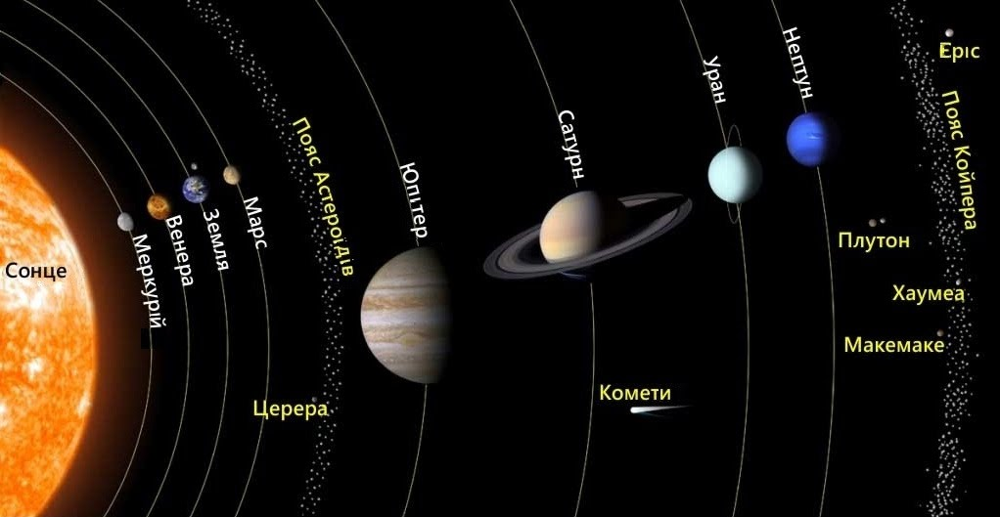

Внутрішні чотири планети, найближчі до Сонця – Меркурій, Венера, Земля та Марс – часто називають “земними планетами “, оскільки їх поверхні кам’янисті. Плутон також має кам’янисту, хоч і замерзлу поверхню, але ніколи не був згрупований з чотирма земними. Чотири великі зовнішні світи – Юпітер, Сатурн, Уран і Нептун – іноді називають “подібними до Юпітера” через їх величезні розміри щодо планети Земля. Вони також здебільшого складаються з таких газів, як водень, гелій та аміак, а не з кам’янистих поверхонь, хоча астрономи вважають, що деякі або всі з них можуть мати тверді ядра. Юпітер і Сатурн іноді називають газовими гігантами, тоді як більш віддалені Уран і Нептун отримали прізвисько крижаних велетнів.
